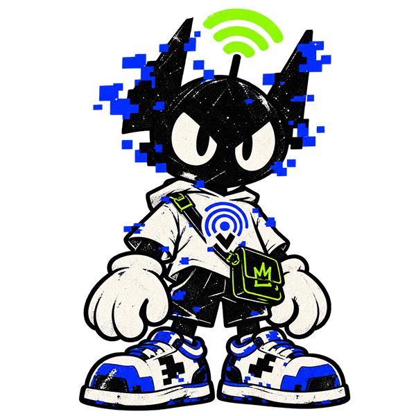
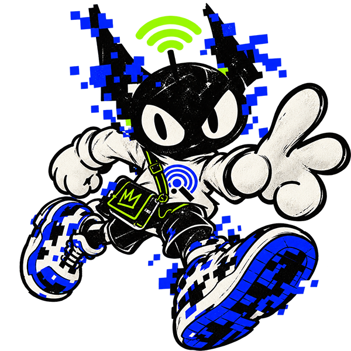

Queue up.
Tournaments, couch co-op and friendly rivalries that get loud.
SERVER: REAL_LIFE · LAGOS_01
Gaming, creators, music and internet culture — in real life. Same people, new playground.


01 / The yard, explained
PINGYARD is where gaming, creators, music and online communities meet in real life. Come for the game. Leave with new people in your contacts.
Tournaments, couch co-op and friendly rivalries that get loud.
Creator sessions, ideas in progress and room to try something new.
Watch parties, live sets and the moments you can’t clip later.
Real conversations with the names you know from the timeline.
02 / Up next
One day, one yard, every kind of player. Bring your crew or find one when you get here.
View session ↗03 / Pick your lobby
The server is moving.
Queue up. Prove it.
No timeline. Just real time.
Where the internet comes outside.
04 / Community feed
Setups, brackets, memories and conversations from players around the yard.
Enter community ↗Who else is entering RANKED for Tekken? Need to settle this before session day.
12 REACTS · 4 REPLIESMade it offline. Left with three new friends and zero voice chat lag.
PHOTO MEMORY · BENIN CITYUNIBEN campus session needs another FC bracket. Who’s bringing a pad?
8 REACTS · 2 REPLIES05 / Field kit
Session gear for people who like their internet with a side of outside. Find the first Player Pack at PINGYARD sessions.
View Drop_001 ↗